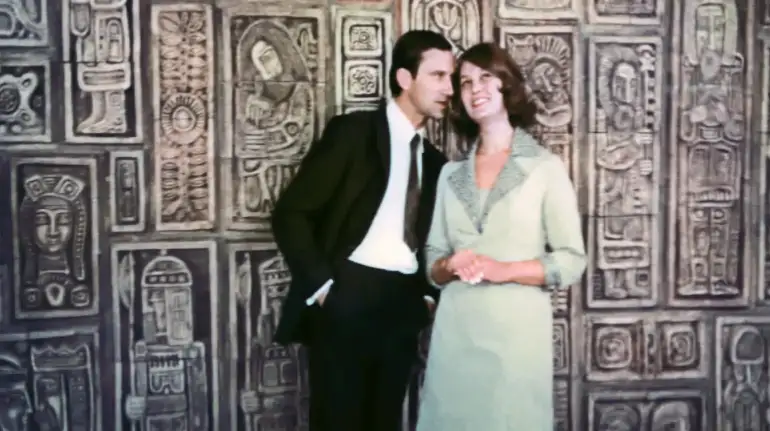

Культура
«Осяяння» повертається: забутий експеримент українського кіно
«Осяяння» Володимира Денисенка мало посісти важливе місце в історії українського кіно, втім радянська критика розгромила стрічку, а дослідники й глядачі на довгі роки про неї забули.
Спеціально для УП.Культура дослідник кіно Олег Оліфер разом із Довженко-Центром розповідає про цю несправедливо забуту стрічку про життя і марення української технічної інтелігенції, яке тепер доступне в онлайн-кінотеатрі ДЦ.

Чи мріють гречкосії про теоретичну фізику?
В інтерв'ю 2001 року Віталій Шелест, син першого секретаря ЦК КП України Петра Шелеста (1963–1972), розповідав, як йому довелося задіювати вплив батька, щоб створити в Києві академічний Інститут теоретичної фізики. За його словами, цьому протидіяли із союзної Академії наук і Держкомітету з науки і техніки.
Вважалось, що в Україні сидять гречкосії, тому такий інститут їм не потрібен.
Інститут теоретичної фізики АН УРСР було створено у 1966 році. Очолив установу вчений Микола Боголюбов, а 26-річний Віталій Шелест став його заступником з наукових питань. У 1970 році під час Міжнародної конференції з фізики високих енергій у Києві було введено в експлуатацію новий корпус Інституту, який побудували у Феофанії неподалік Свято-Пантелеймонівського монастиря.
За ініціативи Віталія Шелеста декорувати будівлю запросили художників-монументалістів, а одну з мозаїк, що прикрасила Інститут, створив Іван Марчук. Його робота «Шлях до зірок» поєднувала сучасність і науку з народними традиціями, вплітаючи атом і його орбіталі у барвисті строкаті латки, що нагадують українську «плахту» — іншу, більш відому назву мозаїки.
Наступного року після відкриття корпусу до Інституту на ім'я Віталія Шелеста надійшов лист із Кіностудії імені О. Довженка. Тодішній директор студії Василь Цвіркунов просив згоди на проведення у приміщенні Інституту кінозйомок фільму «Осяяння» режисера Володимира Денисенка. Крім того, потрібен був консультант, адже нова стрічка мала розповідати «про життя та діяльність радянських вчених — наших сучасників».
Науковці в українському кіно 1960-х
Із середини 60-х років науковці в українському кіно стають дедалі частішими гостями поміж традиційної революційної героїки, а також колгоспних і виробничих тем. «Явдоха Павлівна» (1966) Олександра Муратова і «Важкий колос» (1969) Володимира Денисенка розповідали про селекціонерів-новаторів у сільському господарстві, «Карантин» (1968) Суламіф Цибульник досліджував тему епідемій у великому місті, а у фокусі «Шляху до серця» (1970) Віктора Івченка були медики, одержимі новітніми і одночасно ризикованими методами лікування.
Герої цих фільмів і їхнє середовище відображали переважно загальнорадянську дійсність, де часто були відсутні будь-які виразні національні теми і ознаки, окрім вивісок магазинів чи установ, прізвищ або елементів одягу.
Значно рідше траплялося підкреслення національного, як у «Шляху до серця». Тут українець-кардіохірург виправляє іноземного колегу, який називає його росіянином, а студент на питання журналістки, куди він хотів би потрапити, маючи машину часу, з ентузіазмом відповідає: «У 1648 рік, військо гетьмана запорозького Богдана-Зиновія Хмельницького».
Зі свого боку новий фільм Володимира Денисенка «Осяяння», зйомки якого планували у стінах Інституту теоретичної фізики, не був схожий на жодну з перелічених спроб зобразити українського науковця. Денисенко, відомий неабиякою ерудицією, відходить від звичних формул і шаблонів та намагається сконструювати нового українського героя-інтелектуала, підкреслюючи культурну насиченість його оточення.
Так, в «Осяянні» тлом для інтелектуальних дискусій героїв слугує монументальна творчість і живопис Івана Марчука, а музичним супроводом — українські естрадні хіти і народні пісні. Персонажі іронізують про Годара і сексуальну революцію, колекціонують українську старовину, знають відмінності між крашанками і писанками, читають українські переклади Данте і Вітмена.
За референсами ж режисер звертається не до радянської кінотрадиції, а до Бергмана, Фелліні та Антоніоні. Таке «геть від Москви, даєш психологічну Європу» на кінематографічний лад згодом московська критика буде трактувати як моду на буржуазне безсюжетне кіно.
Врешті-решт Віталій Шелест дав дозвіл на зйомки «Осяяння», і з його «благословення» Інститут теоретичної фізики став майданчиком одного з найцікавіших українських кіноекспериментів радянського післявоєнного періоду. Результат цього експерименту мав усі якості, щоб стати етапним фільмом українського кіно. Однак фільм був розгромлений, забутий і десятиліттями практично ігнорований дослідниками.